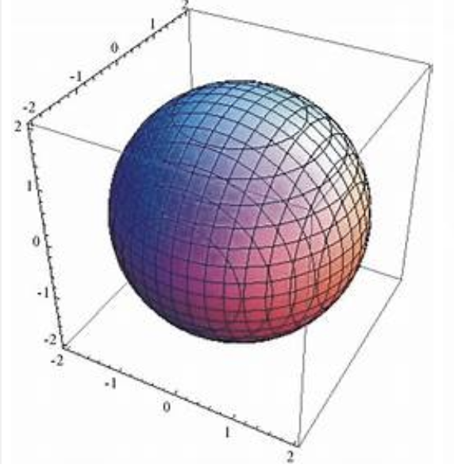

In this module we will cover how to plot three-dimensional graphs. Some examples are shown below.

It becomes necessary to be able to examine three-dimensional shapes because most items in the real-world are three dimensional. Graphing with an x-y coordinate plane only gives us the ability to work with two-dimensional objects. That's great for squares and circles, but what about Rectangular Prisms or Spheres?
Therefore, three-dimensional graphing was created.
The difference between 2D and 3D Graphing is:
2D graphing uses (x, y) ordered pairs that correspond to an x-y axis. 3D graphing uses 3 ordered pairs represented as (x, y, z) which correspond to an x-y-z coordinate plane, shown below.
The x-y-z axis is similar to the x-y coordinate axis, as the x-and y-axis are still a part of the graph. Instead of it facing at you like the 2D graph does, in 3D, the x-and y-axis are horizontal or flat, the z-axis is the vertical axis.
Just as with 2D graphing, 3D graphing has 3 axes that each correspond with its ordered pair.
Always start with your pencil at the Origin (0, 0, 0).
Example 1: Plot the point (4, 0, 0).
Example 2: Plot the point (0, 3, 0).
Example 3: Plot the point (0, 0, 4).
Example 4: Plot the point (-3, 0, 0).
Example 5: Plot the point (0, -4, 0).
Example 6: Plot the point (0, 0, -3).
Example 7: Plot the point (2, 3, 4).
Forward 2, right 3, up 4
Example 8: Plot the point (4, 2, -4).
Forward 4, right 2, down 4
Example 9: A 3D plot of a cube
Example 10: A 3D plot of a pyramid